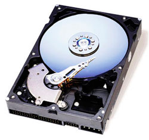

Как выбрать жёсткий диск?

Нынче
компьютерная техника идёт вперёд семимильными шагами. Совершенствуются и модернизируются уже существующие компоненты компьютерной техники, появляются новые и современные.
Жёсткие диски компьютеров также постоянно совершенствуются и развиваются. Растёт ёмкость дисков, увеличивается быстродействие и эргономика.
Сейчас в продаже имеется огромное множество моделей жёстких дисков, со своими плюсами и минусами и разобраться во всех тонкостях моделей и технологий бывает очень не просто. Так
как же выбрать ж.д, чтобы плюсов было всё же больше?
Если рассматривать такой компонент как надёжность, то здесь трудно отдать кому-то предпочтение. Все серьёзные производители подобной техники по качеству продукции примерно равны
в следствии многолетней серьёзной конкуренции на рынке. Здесь проблеме устойчивости к отказам придаётся огромное значение, ведь любой ж.д фактически имеет свою микропрограмму, чуть
ли не главной задачей которой, как раз является обработка так называемых "сбойных ситуаций", позволяющая выявлять и отслеживать появляющиеся и уже существующие дефекты на поверхности
ж.д. При поиске положения головок (чтения и записи) применяется большое количество автоподстроек с обратными связями, а при производстве упор делается на тщательный контроль
производимой продукции. Все серьёзные производители поставляют на рынок только качественные и доведённые до ума модели ж.д.. Всё это делает вопрос о выборе торговой марки просто
бессмысленным.
А вот вопрос выбора модельного ряда по прежнему остаётся актуальным ведь даже в продукции одного производителя можно найти модельные линейки с разной производительностью, надёжностью,
ценой и назначением. Техническую документацию на определённую модель сейчас можно с лёгкостью найти на официальном сайте производителя и потребителю можно будет выбирать себе модель
ж.д исходя из своих потребностей и финансовых возможностей. Так же на сайте компаний можно найти информацию о приглянувшейся модели, которая обновляется и дорабатывается каждый год. В
случае какой-либо ошибки в микропрограмме, на сайте можно скачать программу, исправляющую этот дефект, однако чаще такие программы служат для увеличения производительности и надёжности
устройства.
Почаще заглядывайте в интернет ведь там возможно будут размещены отзывы на интересующую вас модель других покупателей. Если у модели постоянно возникают дефекты и отказы, вы обязательно
узнаете об этом.Не стоит без необходимости брать последнюю вышедшую модель, ведь в таком случае есть большая вероятность приобрести ещё "сырую", недоработанную технику, к тому же не стоит
забывать что новая модель всегда будет стоить дороже, но уже возможно после нескольких месяцев продаж, цена на неё может значительно упасть.
Так же стоит отдельно присмотреться к такому параметру как ёмкость, выбирайте ж.д на перспективу. Сейчас в продаже есть три вида дисковых накопителей: однопластинные, двух и трёхпластинные
и каждый предназначен для своих целей. Первый вид идеален для размещения О.С так как мало греется а следовательно более надёжен. Второй вид подходит для мультимедийных и игровых программ.
А третий вид в основном для остальных случаев, так как эти носители довольно капризны, дороги, а при выходе их из строя теряется огромное количество информации при трудности резервного копирования.
Жесткие диски в игровых компьютерах.
Ну и конечно всегда покупайте диски в фирменных магазинах, где вам обязательно предложат гарантию, так как сомнительные места для покупок являются прибежищем серого импорта и устройств
после ремонта и небольшая экономия в конечном счёте может обернуться потерей важных данных и новыми финансовыми тратами.
Следующая статья:
Водяная система охлаждения компьютерной техники.